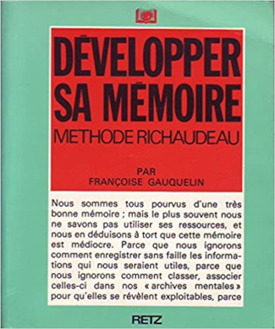
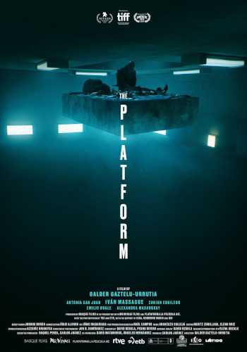

Comme je vous en raconte tellement et que les paroles s'envolent.... Je vais vous laisser quelques recommandations pour combler certaines lacunes. Si, si, il faut combler. Parce que le chewing-gum des yeux (tous les écrans) ne suffit pas à élargir votre empan de connaissances. Mes recommandations seront d'ordre littéraires, musicales, cinématographiques, artistiques, culinaires et au gré de nos conversations.
Dark Was the Night (Blind Willie Johnson)
Quand j'entends les premières mesures de cette chanson, je me tais, je ferme les yeux et plus rien ne compte. Chuuuut écoute.
The Maid Freed From The Gallows (John Jacob Niles)
C'est avec cette chanson que j'ai découvert le monde musical de John Jacob Niles. Ecoutez sa tessiture de voix, sentez comme il vit sa chanson. Tout est simple et tellement puissant.
En faisant des recherches j'ai appris qu'il faisait de la lutherie pour fabriquer ses instruments (anciens ou bizaroïdes), qu'il se moquait du succès, bref un mec étrange. M'en fallait pas plus pour l'adorer.
Afghan (Bazgul Badakhshi)
Je cherchais une musique pour illustrer l'article sur Les Cavaliers tout en me demandant ce qui avait pu envoûter Joseph Kessel en Afghanistan. Seulement il y avait tellement de belles choses dans cette région du monde que j'étais perdu. Peut-être y a-t-il ressenti le sentiment océanique. Et de vidéo en vidéo je regarde celle-ci sans grande conviction, musicalement elle me transporte moins que d'autres, et puis je vois le musicien avec le tambourin. Là tout a basculé, j'ai cru que je comprenais ce que le chanteur racontait, le percussionniste mimait la chanson et la vivait, je suis resté bouche bée jusqu'à la fin.
Les Cavaliers (Joseph Kessel)
Mais puisque je vous dis que j'ai vu Guardi Guedj l'aïeul de tous les aïeux. J'étais dans le camion qui l'emmenait vers une tchaïkhana, j'ai patiemment attendu d'arriver pour l'entendre conter l'une de ces innombrables histoires de l'hindou kouch. J'ai senti mes membres gagnés par l'arthrite comme Toursen le plus grand tchopendoz, j'ai eu la jeunesse bravache de Ouroz, j'ai crié dans l'oreille de Jehol le cheval fou, j'ai été Saï le palefrenier de Jehol, d'abord bon puis perverti par l'avidité de Zéré… Longtemps après avoir lu et relu plusieurs fois ce livre, je revis avec intensité certains moments que raconte l'auteur qui a su nous donner une grande part de son amour pour l'Afghanistan. Je recommande vivement sa lecture et relecture à tous les âges de la vie.
Je ne sais plus comment je me suis retrouvé avec ce livre entre mes mains (Mwarf) juste avant de me retrouver dans le charter de la Syrian air pour me rendre en Inde. J'ai dévoré ce livre comme un affamé, comme si c'était le livre que j'avais attendu toute ma vie. Les quelques techniques, toutes simples, proposées dans ce livre me paraissaient si évidentes que j'en suis arrivé à me demander pourquoi elles n'étaient pas enseignées à l'école. Toutes les autres matières seraient devenues un jeu. Non, c'était juste Il faut retenir tout ça par cœur, mais jamais comment.

Put the lime in the coconut (Harry Nilsson)
Moi j'entendais mettre du citron dans la noix de coco, mais c'est mettre du citron vert dans l'eau de coco. J'avais trouvé que c'était une sorte de médication, j'apprends que c'est pour soigner la gueule de bois, puis je découvre que c'est aussi fumer (le truc qui rend idiot). Je vais juste garder la chanson sans additifs.
La plateforme (Galder Gaztelu-Urrutia)
J'ai dit à un camarade de formation que parfois la vie me semblait comme un banquet maudit où tout le monde dévorait les richesses de la terre sans se soucier de l'avenir. Quand je me suis souvenu de ce film fait par un réalisateur espagnol qui illustre bien mieux cette idée.

Mustt Mustt (Massive Attack and Nusrat Fateh Ali Khan)
Et d'une pierre deux coups, Nusrat Fateh Ali Khan est l'artiste que je voulais vous présenter quand j'ai découvert Sain Zahour. Mais je ne pouvais pas non plus laisser passer ce magnique morceau de groove réalisé avec Massive Attack. Un groupe anglais à découvrir bien sûr sans modération. Donc c'est partie remise pour vous raconter comment j'ai découvert Nusrat Fateh Ali Khan. Et il y en a qui veulent interdire la musique, alors que la vie est son et rythme.
Librairie Lello (Porto)
Pour moi c'est la plus belle librairie qu'il m'ait été donné de voir. Je n'ai malheureusement pas pu atteindre la qualité souhaitée. Mais un pied photo et une rotule panoramique home-made, ça ne rentre pas dans les volumes autorisés par les compagnies low-cost. Malgré tous les raccords un peu bancales on peut quand même avoir une idée du magnifique travail de menuiserie.